图片难度粗分类 · 21图主观对照审查
最新：6点对低遮挡看图调整，6张改为简单；旧分组和GT结构类仅作追溯。此前评分复核：门洞／OOS独立评判；x8-01参考待核。查看x8-01原GT与5份作答。
旧结构三档只由GT点对数和结构自遮挡决定；最新工作分类另含逐图视觉判断。门洞交界是相机处于门洞／门框交界附近，非照片中出现任何门；OOS不等于不可标。
本页为目的性案例，不是随机样本或准确率验证。普通三组示例不含已确认特殊图，但“unflagged”仍表示未标特殊，不认证普通。OOS、门洞及重叠组单列；其中的结构类别照常保留。
已有评分可展开查看；早期“过程预期”与后来“主观难度”明确区分。你可先看照片再展开，按编号在聊天中反馈。本页不会改动任何旧评分或类别。
状态说明：confirmed＝已记OOS；not_oos＝明确非OOS；not_recorded＝未记录；门洞none＝明确无，annotatable＝可标，difficult＝旧记录难标（不等于不可标）。not_explicitly_resolved＝可标性未明确裁决。
初选分组：结构简单（旧分组，最新类别见图卡）
01 · 7y3sRwLe3Va-04 · GT结构记录：简单
N=4 点对，H=0 个底面顶点被墙体遮挡；参考：gt_original。
OOS：not_oos；门洞：none；可标性：not_explicitly_resolved；场景记录：clear
复核状态：暂用结构粗分；GT范围一致性尚未逐图认证。 最新工作类：简单。
展开你过去的判断：简单 · 历史图级主观判断
后续用户主观难度及原备注，未进行新盲标
来源：analysis_results/difficulty_consensus_20261006/user_review.json
已有场景备注：无追加图级备注；未知不等于普通。
参考与图片来源
D:\Work\HOHONET\data\mp3d_layout\test\img\7y3sRwLe3Va_1410b021e1c14f529188eb026fbb369a.png
gt:7y3sRwLe3Va_1410b021e1c14f529188eb026fbb369a:data/mp3d_layout/test/label_cor/7y3sRwLe3Va_1410b021e1c14f529188eb026fbb369a.txt
环确认：False；房间：未知
回复示例：01，主观中等；门洞状态认可／需改；理由……。暂停图无需重新判断。
02 · q9vSo1VnCiC-32 · GT结构记录：简单
N=4 点对，H=0 个底面顶点被墙体遮挡；参考：gt_manual_revision。
OOS：not_oos；门洞：none；可标性：not_explicitly_resolved；场景记录：clear
复核状态：暂用结构粗分；GT范围一致性尚未逐图认证。 最新工作类：简单。
展开你过去的判断：中等 · 历史图级主观判断
后续用户主观难度及原备注，未进行新盲标
来源：analysis_results/difficulty_consensus_20261006/user_review.json
已有场景备注：存在多种空间的标注范围
参考与图片来源
D:\Work\HOHONET\data\mp3d_layout\test\img\q9vSo1VnCiC_e74e843601574864a14517f990c748a0.png
gt:q9vSo1VnCiC_e74e843601574864a14517f990c748a0:export_label/groudTruth.json
环确认：True；房间：G149
回复示例：02，主观中等；门洞状态认可／需改；理由……。暂停图无需重新判断。
03 · 2t7WUuJeko7-06 · GT结构记录：简单
N=4 点对，H=0 个底面顶点被墙体遮挡；参考：gt_original。
OOS：not_oos；门洞：none；可标性：not_explicitly_resolved；场景记录：clear
复核状态：暂用结构粗分；GT范围一致性尚未逐图认证。 最新工作类：简单。
展开你过去的判断：未记录 · 未获得三档评分
未知／未记录，未用于校准
来源：no_resolved_three_level_label
已有场景备注：无追加图级备注；未知不等于普通。
参考与图片来源
D:\Work\HOHONET\data\mp3d_layout\valid\img\2t7WUuJeko7_3be66dc4f0fb46449d63b07d92c74f3f.png
gt:2t7WUuJeko7_3be66dc4f0fb46449d63b07d92c74f3f:data/mp3d_layout/valid/label_cor/2t7WUuJeko7_3be66dc4f0fb46449d63b07d92c74f3f.txt
环确认：False；房间：G003
回复示例：03，主观中等；门洞状态认可／需改；理由……。暂停图无需重新判断。
初选分组：结构中等（旧分组，最新类别见图卡）
04 · uNb9QFRL6hY-19 · GT结构记录：中等
N=6 点对，H=0 个底面顶点被墙体遮挡；参考：gt_original。
OOS：not_recorded；门洞：not_recorded；可标性：not_explicitly_resolved；场景记录：unflagged
复核状态：暂用结构粗分；GT范围一致性尚未逐图认证。 最新工作类：中等。
展开你过去的判断：中等 · 早期过程预期，不能当执行难度
9/13审图预期：较早稳定／可能稳定多簇／观察内持续变化；不是固有执行难度
来源：analysis_results/candidate_selection_review_20260913_v2/用户审查原始记录.json
已有场景备注：无追加图级备注；未知不等于普通。
参考与图片来源
D:\Work\HOHONET\data\mp3d_layout\test\img\uNb9QFRL6hY_33dd9892d10e474ead8f7ad38a8da562.png
gt:uNb9QFRL6hY_33dd9892d10e474ead8f7ad38a8da562:data/mp3d_layout/test/label_cor/uNb9QFRL6hY_33dd9892d10e474ead8f7ad38a8da562.txt
环确认：False；房间：G179
回复示例：04，主观中等；门洞状态认可／需改；理由……。暂停图无需重新判断。
05 · VFuaQ6m2Qom-01 · GT结构记录：中等
N=10 点对，H=0 个底面顶点被墙体遮挡；参考：gt_original。
OOS：not_recorded；门洞：not_recorded；可标性：not_explicitly_resolved；场景记录：unflagged
复核状态：暂用结构粗分；GT范围一致性尚未逐图认证。 最新工作类：中等。
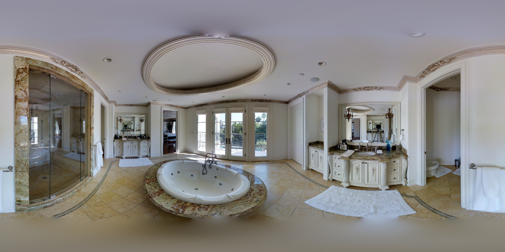
展开你过去的判断：困难 · 早期过程预期，不能当执行难度
9/13审图预期：较早稳定／可能稳定多簇／观察内持续变化；不是固有执行难度
来源：analysis_results/candidate_selection_review_20260913_v2/用户审查原始记录.json
已有场景备注：无追加图级备注；未知不等于普通。
参考与图片来源
D:\Work\HOHONET\data\mp3d_layout\valid\img\VFuaQ6m2Qom_109e18c64a614dc49e41a33ae979f98a.png
gt:VFuaQ6m2Qom_109e18c64a614dc49e41a33ae979f98a:data/mp3d_layout/valid/label_cor/VFuaQ6m2Qom_109e18c64a614dc49e41a33ae979f98a.txt
环确认：False；房间：G057
回复示例：05，主观中等；门洞状态认可／需改；理由……。暂停图无需重新判断。
06 · b8cTxDM8gDG-07 · GT结构记录：中等
N=6 点对，H=0 个底面顶点被墙体遮挡；参考：gt_original。
OOS：not_recorded；门洞：not_recorded；可标性：not_explicitly_resolved；场景记录：unflagged
复核状态：暂用结构粗分；GT范围一致性尚未逐图认证。 最新工作类：简单。2026-10-10看图调整：卧室主体、门侧凸墙和窗侧转折可辨；床主要遮住局部底端。简单判断限于当前GT的卧室范围，原范围差异记录继续保留。
展开你过去的判断：简单 · 历史图级主观判断
后审图级主观难度，非独立盲标
来源：resolved_image_traits
已有场景备注：无追加图级备注；未知不等于普通。
参考与图片来源
D:\Work\HOHONET\data\mp3d_layout\test\img\b8cTxDM8gDG_51c90ec9afc4495ab3788c6badc303df.png
gt:b8cTxDM8gDG_51c90ec9afc4495ab3788c6badc303df:data/mp3d_layout/test/label_cor/b8cTxDM8gDG_51c90ec9afc4495ab3788c6badc303df.txt
环确认：False；房间：G086
回复示例：06，主观中等；门洞状态认可／需改；理由……。暂停图无需重新判断。
07 · S9hNv5qa7GM-05 · GT结构记录：中等
N=6 点对，H=0 个底面顶点被墙体遮挡；参考：gt_original。
OOS：not_recorded；门洞：not_recorded；可标性：not_explicitly_resolved；场景记录：unflagged
复核状态：暂用结构粗分；GT范围一致性尚未逐图认证。 最新工作类：简单。2026-10-10看图调整：淋浴区与浴室的主要转折、上边界清楚；浴缸仅局部遮住底边，不需推断整处隐藏墙角。
展开你过去的判断：未记录 · 未获得三档评分
未知／未记录，未用于校准
来源：no_resolved_three_level_label
已有场景备注：无追加图级备注；未知不等于普通。
参考与图片来源
D:\Work\HOHONET\data\mp3d_layout\valid\img\S9hNv5qa7GM_322a5d3bbca1428fb92d39bfc6e603ee.png
gt:S9hNv5qa7GM_322a5d3bbca1428fb92d39bfc6e603ee:data/mp3d_layout/valid/label_cor/S9hNv5qa7GM_322a5d3bbca1428fb92d39bfc6e603ee.txt
环确认：False；房间：G046
回复示例：07，主观中等；门洞状态认可／需改；理由……。暂停图无需重新判断。
初选分组：结构困难（旧分组，最新类别见图卡）
08 · UwV83HsGsw3-09 · GT结构记录：困难
N=8 点对，H=2 个底面顶点被墙体遮挡；参考：gt_manual_revision。
OOS：not_oos；门洞：none；可标性：not_explicitly_resolved；场景记录：clear
复核状态：暂用结构粗分；GT范围一致性尚未逐图认证。 最新工作类：困难。
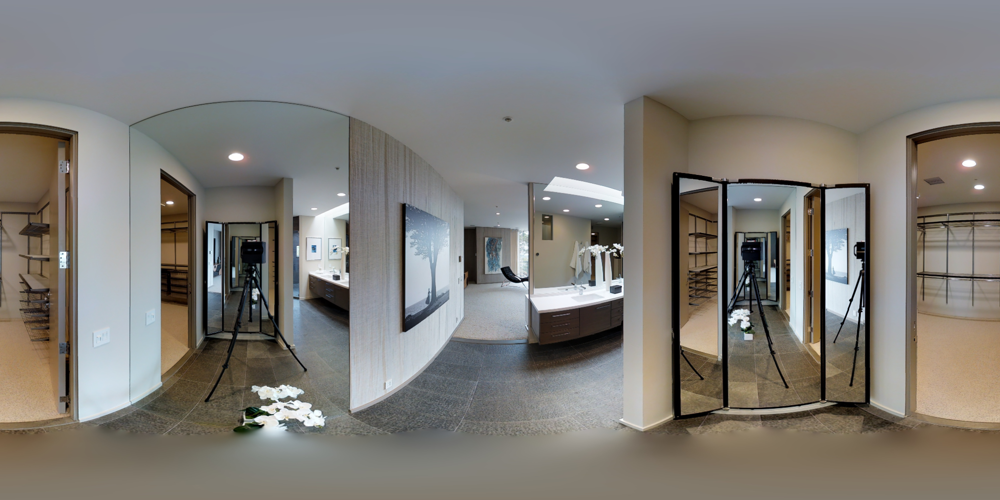
展开你过去的判断：困难 · 历史图级主观判断
后续用户主观难度及原备注，未进行新盲标
来源：analysis_results/difficulty_consensus_20261006/user_review.json
已有场景备注：比较难,有多种空间的标注范围
参考与图片来源
D:\Work\HOHONET\data\mp3d_layout\test\img\UwV83HsGsw3_7482b1a2655e4655ae4ab58749f43f65.png
gt:UwV83HsGsw3_7482b1a2655e4655ae4ab58749f43f65:export_label/groudTruth.json
环确认：True；房间：未知
回复示例：08，主观中等；门洞状态认可／需改；理由……。暂停图无需重新判断。
09 · yqstnuAEVhm-25 · GT结构记录：困难
N=6 点对，H=1 个底面顶点被墙体遮挡；参考：gt_original。
OOS：not_oos；门洞：none；可标性：not_explicitly_resolved；场景记录：clear
复核状态：暂用结构粗分；GT范围一致性尚未逐图认证。 最新工作类：困难。
展开你过去的判断：中等 · 历史图级主观判断
后续用户主观难度及原备注，未进行新盲标
来源：analysis_results/difficulty_full_20261007/updated/human_review.json
已有场景备注：右边遮挡,有些人忽略,有些人标的有偏差
参考与图片来源
D:\Work\HOHONET\data\mp3d_layout\test\img\yqstnuAEVhm_9de98503fd994452b627cdcc7a7d47b2.png
gt:yqstnuAEVhm_9de98503fd994452b627cdcc7a7d47b2:data/mp3d_layout/test/label_cor/yqstnuAEVhm_9de98503fd994452b627cdcc7a7d47b2.txt
环确认：False；房间：G243
回复示例：09，主观中等；门洞状态认可／需改；理由……。暂停图无需重新判断。
10 · wc2JMjhGNzB-29 · GT结构记录：困难
N=8 点对，H=2 个底面顶点被墙体遮挡；参考：gt_original。
OOS：not_oos；门洞：none；可标性：not_explicitly_resolved；场景记录：clear
复核状态：暂用结构粗分；GT范围一致性尚未逐图认证。 最新工作类：困难。
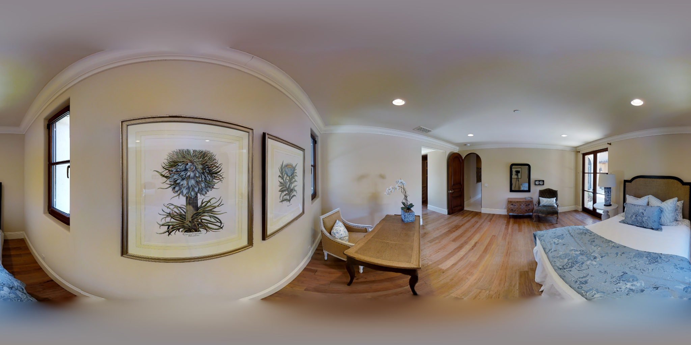
展开你过去的判断：简单 · 早期过程预期，不能当执行难度
9/13审图预期：较早稳定／可能稳定多簇／观察内持续变化；不是固有执行难度
来源：analysis_results/candidate_selection_review_20260913_v2/用户审查原始记录.json
已有场景备注：无追加图级备注；未知不等于普通。
参考与图片来源
D:\Work\HOHONET\data\mp3d_layout\test\img\wc2JMjhGNzB_52ed6a0219e84a0bb6db8037ae700366.png
gt:wc2JMjhGNzB_52ed6a0219e84a0bb6db8037ae700366:data/mp3d_layout/test/label_cor/wc2JMjhGNzB_52ed6a0219e84a0bb6db8037ae700366.txt
环确认：False；房间：G205
回复示例：10，主观中等；门洞状态认可／需改；理由……。暂停图无需重新判断。
初选分组：门洞交界单列（旧分组，最新类别见图卡）
11 · jtcxE69GiFV-12 · GT结构记录：困难
N=6 点对，H=1 个底面顶点被墙体遮挡；参考：gt_original。
OOS：not_recorded；门洞：annotatable；可标性：doorway_annotatable；场景记录：doorway_annotatable
复核状态：特殊场景：独立难度尚未赋分，GT结构类仅作诊断。 最新工作类：单列／待定，未赋三档。
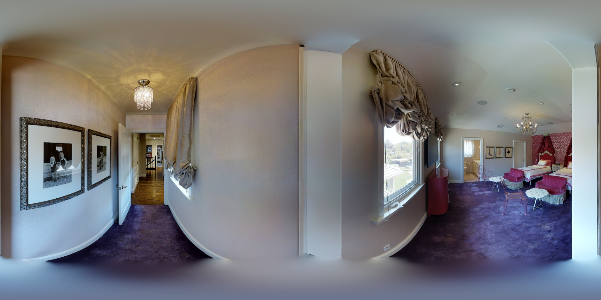
展开你过去的判断：困难 · 历史图级主观判断
后审图级主观难度，非独立盲标
来源：resolved_image_traits
已有场景备注：无追加图级备注；未知不等于普通。
参考与图片来源
D:\Work\HOHONET\data\mp3d_layout\valid\img\jtcxE69GiFV_539fb3f6f19b442285b593628a8ce14e.png
gt:jtcxE69GiFV_539fb3f6f19b442285b593628a8ce14e:data/mp3d_layout/valid/label_cor/jtcxE69GiFV_539fb3f6f19b442285b593628a8ce14e.txt
环确认：False；房间：未知
回复示例：11，主观中等；门洞状态认可／需改；理由……。暂停图无需重新判断。
12 · uNb9QFRL6hY-47 · GT结构记录：中等
N=8 点对，H=0 个底面顶点被墙体遮挡；参考：gt_manual_revision。
OOS：not_recorded；门洞：annotatable；可标性：doorway_annotatable；场景记录：doorway_annotatable
复核状态：特殊场景：独立难度尚未赋分，GT结构类仅作诊断。 最新工作类：单列／待定，未赋三档。
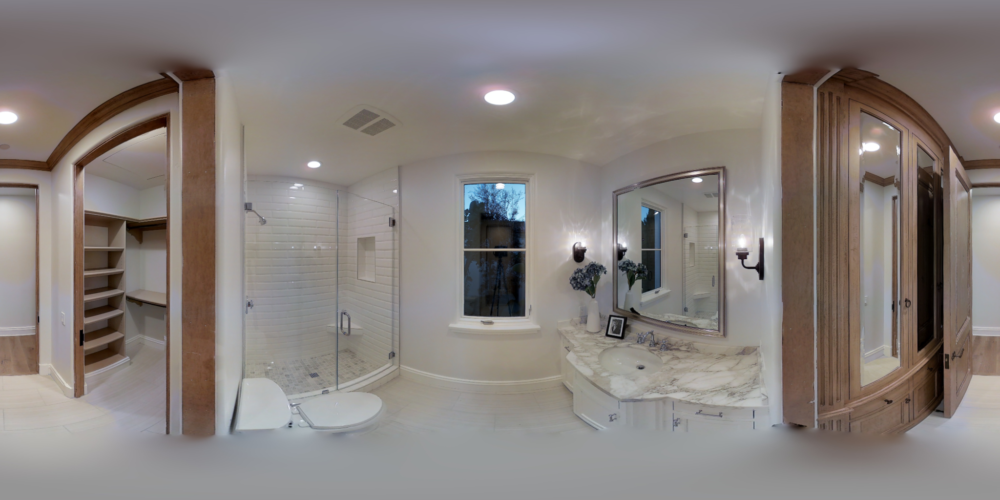
展开你过去的判断：困难 · 历史图级主观判断
后审图级主观难度，非独立盲标
来源：resolved_image_traits
已有场景备注：无追加图级备注；未知不等于普通。
参考与图片来源
D:\Work\HOHONET\data\mp3d_layout\test\img\uNb9QFRL6hY_978d7a8eb0794936bd8fd092306e1dc5.png
gt:uNb9QFRL6hY_978d7a8eb0794936bd8fd092306e1dc5:export_label/groudTruth.json
环确认：True；房间：G197
回复示例：12，主观中等；门洞状态认可／需改；理由……。暂停图无需重新判断。
13 · uNb9QFRL6hY-21 · GT结构记录：困难
N=8 点对，H=2 个底面顶点被墙体遮挡；参考：gt_original。
OOS：not_oos；门洞：difficult；可标性：not_explicitly_resolved；场景记录：doorway_difficult
复核状态：特殊场景：独立难度尚未赋分，GT结构类仅作诊断。 最新工作类：单列／待定，未赋三档。
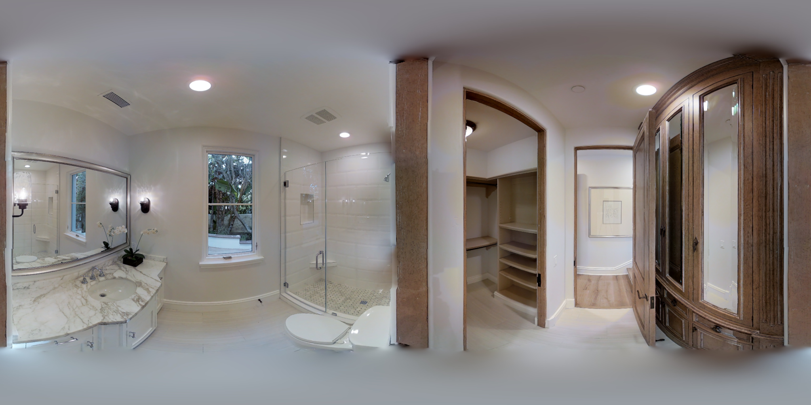
展开你过去的判断：困难 · 历史图级主观判断
后续用户主观难度及原备注，未进行新盲标
来源：analysis_results/difficulty_full_20261007/updated/human_review.json
已有场景备注：难标
参考与图片来源
D:\Work\HOHONET\data\mp3d_layout\test\img\uNb9QFRL6hY_3b9e548b46af4410b97e1d12781ec3c9.png
gt:uNb9QFRL6hY_3b9e548b46af4410b97e1d12781ec3c9:data/mp3d_layout/test/label_cor/uNb9QFRL6hY_3b9e548b46af4410b97e1d12781ec3c9.txt
环确认：False；房间：G186
回复示例：13，主观中等；门洞状态认可／需改；理由……。暂停图无需重新判断。
初选分组：OOS单列（旧分组，最新类别见图卡）
14 · x8F5xyUWy9e-01 · GT结构记录：困难
N=6 点对，H=1 个底面顶点被墙体遮挡；参考：gt_original。
OOS：confirmed；门洞：not_recorded；可标性：nonorthogonal_annotatable；场景记录：oos
复核状态：GT被用户指出有问题；图片难度待核，不沿用结构困难作为结论。 最新工作类：单列／待定，未赋三档。
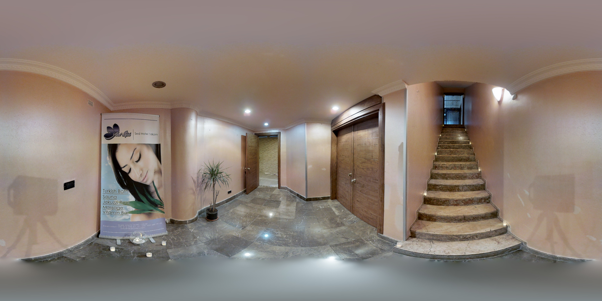
展开你过去的判断：未记录 · 未获得三档评分
未知／未记录，未用于校准
来源：no_resolved_three_level_label
已有场景备注：无追加图级备注；未知不等于普通。
参考与图片来源
D:\Work\HOHONET\data\mp3d_layout\test\img\x8F5xyUWy9e_1be9a97aada84e4795f64583ac0e3b76.png
gt:x8F5xyUWy9e_1be9a97aada84e4795f64583ac0e3b76:data/mp3d_layout/test/label_cor/x8F5xyUWy9e_1be9a97aada84e4795f64583ac0e3b76.txt
环确认：False；房间：G231
回复示例：14，主观中等；门洞状态认可／需改；理由……。暂停图无需重新判断。
15 · x8F5xyUWy9e-09 · GT结构记录：中等
N=6 点对，H=0 个底面顶点被墙体遮挡；参考：gt_manual_revision。
OOS：confirmed；门洞：not_recorded；可标性：nonorthogonal_annotatable；场景记录：oos
复核状态：特殊场景：独立难度尚未赋分，GT结构类仅作诊断。 最新工作类：单列／待定，未赋三档。
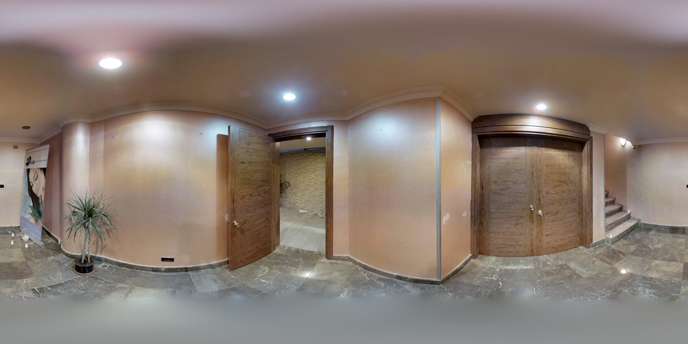
展开你过去的判断：中等 · 历史图级主观判断
后审图级主观难度，非独立盲标
来源：resolved_image_traits
已有场景备注：无追加图级备注；未知不等于普通。
参考与图片来源
D:\Work\HOHONET\data\mp3d_layout\test\img\x8F5xyUWy9e_a51a0e2811f342a599ae4cdb9b84ff23.png
gt:x8F5xyUWy9e_a51a0e2811f342a599ae4cdb9b84ff23:export_label/groudTruth.json
环确认：True；房间：G231
回复示例：15，主观中等；门洞状态认可／需改；理由……。暂停图无需重新判断。
16 · S9hNv5qa7GM-01 · GT结构记录：简单
N=4 点对，H=0 个底面顶点被墙体遮挡；参考：gt_original。
OOS：confirmed；门洞：not_recorded；可标性：not_explicitly_resolved；场景记录：oos
复核状态：特殊场景：独立难度尚未赋分，GT结构类仅作诊断。 最新工作类：单列／待定，未赋三档。
展开你过去的判断：未记录 · 未获得三档评分
未知／未记录，未用于校准
来源：no_resolved_three_level_label
已有场景备注：无追加图级备注；未知不等于普通。
参考与图片来源
D:\Work\HOHONET\data\mp3d_layout\valid\img\S9hNv5qa7GM_0c2a97f049db4a429776940850fedf2e.png
gt:S9hNv5qa7GM_0c2a97f049db4a429776940850fedf2e:data/mp3d_layout/valid/label_cor/S9hNv5qa7GM_0c2a97f049db4a429776940850fedf2e.txt
环确认：False；房间：未知
回复示例：16，主观中等；门洞状态认可／需改；理由……。暂停图无需重新判断。
17 · uNb9QFRL6hY-63 · GT结构记录：简单
N=4 点对，H=0 个底面顶点被墙体遮挡；参考：gt_manual_revision。
OOS：confirmed；门洞：none；可标性：not_explicitly_resolved；场景记录：oos
复核状态：特殊场景：独立难度尚未赋分，GT结构类仅作诊断。 最新工作类：单列／待定，未赋三档。
展开你过去的判断：中等 · 历史图级主观判断
后续用户主观难度及原备注，未进行新盲标
来源：analysis_results/difficulty_full_20261007/updated/human_review.json
已有场景备注：无追加图级备注；未知不等于普通。
参考与图片来源
D:\Work\HOHONET\data\mp3d_layout\test\img\uNb9QFRL6hY_bcce4f23c12744c782c0b49b24a0331a.png
gt:uNb9QFRL6hY_bcce4f23c12744c782c0b49b24a0331a:export_label/groudTruth.json
环确认：True；房间：G180
回复示例：17，主观中等；门洞状态认可／需改；理由……。暂停图无需重新判断。
初选分组：OOS与门洞重叠（旧分组，最新类别见图卡）
18 · pRbA3pwrgk9-01 · GT结构记录：困难
N=10 点对，H=3 个底面顶点被墙体遮挡；参考：gt_original。
OOS：confirmed；门洞：difficult；可标性：not_explicitly_resolved；场景记录：oos_and_doorway
复核状态：特殊场景：独立难度尚未赋分，GT结构类仅作诊断。 最新工作类：单列／待定，未赋三档。
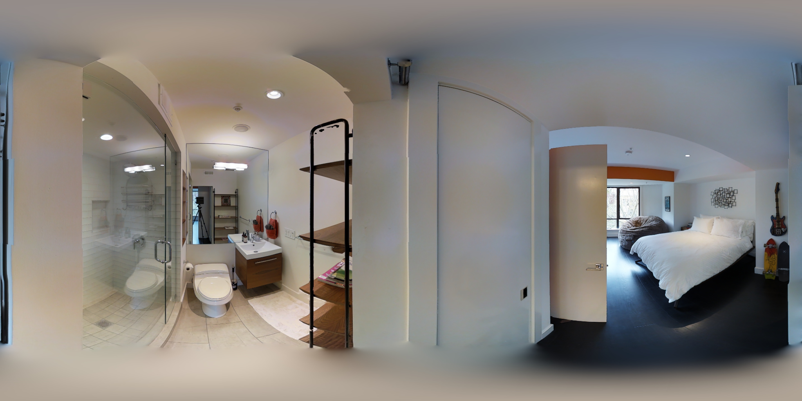
展开你过去的判断：未记录 · 未获得三档评分
未知／未记录，未用于校准
来源：no_resolved_three_level_label
已有场景备注：无追加图级备注；未知不等于普通。
参考与图片来源
D:\Work\HOHONET\data\mp3d_layout\valid\img\pRbA3pwrgk9_0350fc96e88c4a52886d4eb50b2d52c6.png
gt:pRbA3pwrgk9_0350fc96e88c4a52886d4eb50b2d52c6:data/mp3d_layout/valid/label_cor/pRbA3pwrgk9_0350fc96e88c4a52886d4eb50b2d52c6.txt
环确认：False；房间：未知
回复示例：18，主观中等；门洞状态认可／需改；理由……。暂停图无需重新判断。
19 · pRbA3pwrgk9-11 · GT结构记录：困难
N=12 点对，H=4 个底面顶点被墙体遮挡；参考：gt_original。
OOS：confirmed；门洞：difficult；可标性：not_explicitly_resolved；场景记录：oos_and_doorway
复核状态：特殊场景：独立难度尚未赋分，GT结构类仅作诊断。 最新工作类：单列／待定，未赋三档。
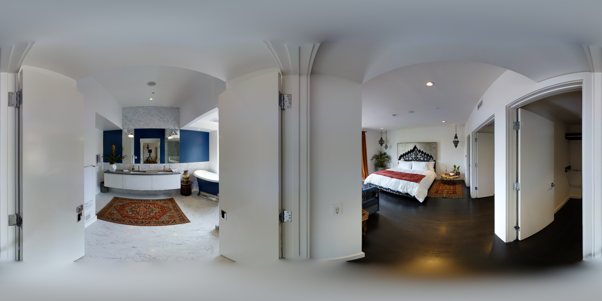
展开你过去的判断：未记录 · 未获得三档评分
未知／未记录，未用于校准
来源：no_resolved_three_level_label
已有场景备注：无追加图级备注；未知不等于普通。
参考与图片来源
D:\Work\HOHONET\data\mp3d_layout\valid\img\pRbA3pwrgk9_8b07a4b08cf447abb246769d8dce8494.png
gt:pRbA3pwrgk9_8b07a4b08cf447abb246769d8dce8494:data/mp3d_layout/valid/label_cor/pRbA3pwrgk9_8b07a4b08cf447abb246769d8dce8494.txt
环确认：False；房间：未知
回复示例：19，主观中等；门洞状态认可／需改；理由……。暂停图无需重新判断。
初选分组：暂停待定：只说明状态，无需重审（旧分组，最新类别见图卡）
20 · jtcxE69GiFV-11 · GT结构记录：待定
N=6 点对，H=1 个底面顶点被墙体遮挡；参考：gt_original。
OOS：not_recorded；门洞：not_recorded；可标性：not_explicitly_resolved；场景记录：unflagged
复核状态：保留已有暂停或不适用状态。 最新工作类：单列／待定，未赋三档。
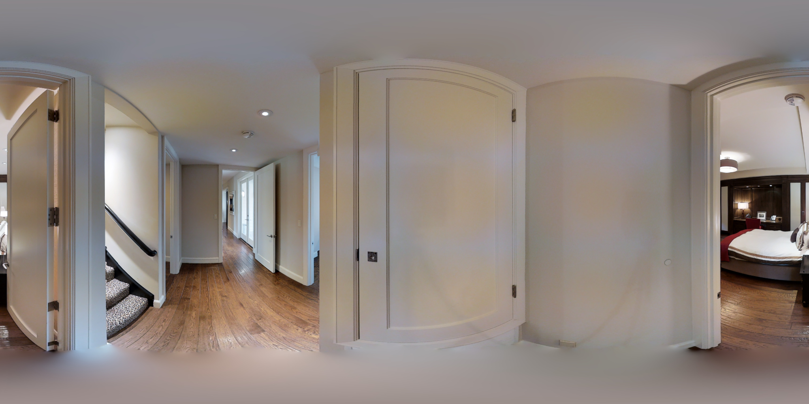
展开你过去的判断：中等 · 历史图级主观判断
后审图级主观难度，非独立盲标
来源：resolved_image_traits
已有场景备注：用户明确暂不纳入分析；不是未完成审核，也不需强制其判断GT。
参考与图片来源
D:\Work\HOHONET\data\mp3d_layout\valid\img\jtcxE69GiFV_4d7ce55eeb6643079aba3b10360de8d8.png
gt:jtcxE69GiFV_4d7ce55eeb6643079aba3b10360de8d8:data/mp3d_layout/valid/label_cor/jtcxE69GiFV_4d7ce55eeb6643079aba3b10360de8d8.txt
环确认：False；房间：G113
回复示例：20，主观中等；门洞状态认可／需改；理由……。暂停图无需重新判断。
21 · pRbA3pwrgk9-16 · GT结构记录：待定
N=6 点对，H=1 个底面顶点被墙体遮挡；参考：gt_original。
OOS：pending；门洞：not_recorded；可标性：not_explicitly_resolved；场景记录：oos_pending
复核状态：保留已有暂停或不适用状态。 最新工作类：单列／待定，未赋三档。
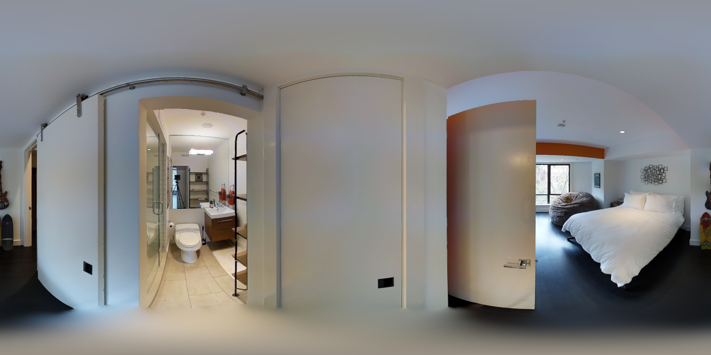
展开你过去的判断：未记录 · 未获得三档评分
未知／未记录，未用于校准
来源：no_resolved_three_level_label
已有场景备注：不太确定是不是oos,而且这图很难,暂时先不搞,而且如果真的能标,gt也有点问题.先排除吧
参考与图片来源
D:\Work\HOHONET\data\mp3d_layout\valid\img\pRbA3pwrgk9_bc9ae89832854c19a69741f97291efad.png
gt:pRbA3pwrgk9_bc9ae89832854c19a69741f97291efad:data/mp3d_layout/valid/label_cor/pRbA3pwrgk9_bc9ae89832854c19a69741f97291efad.txt
环确认：False；房间：未知
回复示例：21，主观中等；门洞状态认可／需改；理由……。暂停图无需重新判断。